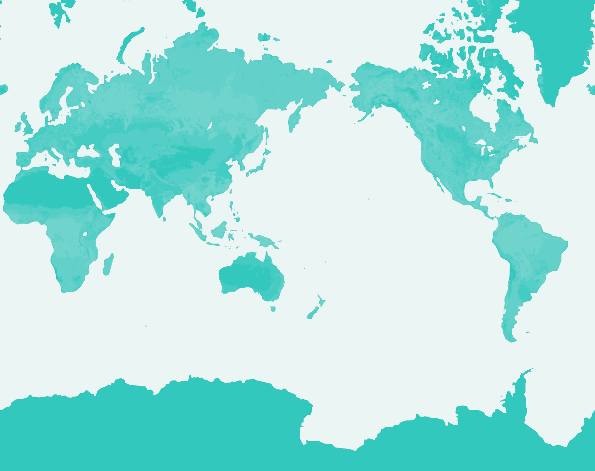

Elva's Travel Map

Melbourne
Kyoto
Brighton
Seattle

Seattle looks like it is in the fall all the time. But my favorite season is fall.
Salt Lake

I have never been to a desert, but I guess the solitude in Bonneville Salt Flats can parallel with that in a desert.


Shanghai
Berkeley


Hi there! I'm Elva, a UC Berkeley student who lives in Berkeley CA and Shanghai China. This is a personal world map I created for my final project in my Web Design DeCal Class. This map is a showcase of the places I have been and the photos I took there. Ever since childhood, I wish I could have a map that keeps a record of all the places I have been to, and thanks to this class (and techology!), this is finally happening, without worrying about keeping a physical map with me for decades.
Right now it is an incomplete collection of my photography works and the places I have been. I will be updating this site with features (such as adding a carousel for the lightbox) and more photos of old and new places!
Acknowledgement: The map image is designed using Mapbox.
Right now it is an incomplete collection of my photography works and the places I have been. I will be updating this site with features (such as adding a carousel for the lightbox) and more photos of old and new places!
Acknowledgement: The map image is designed using Mapbox.